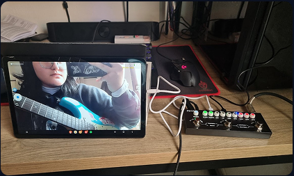
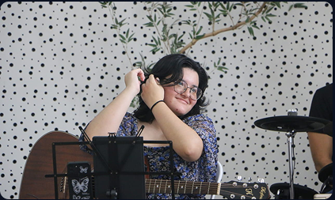
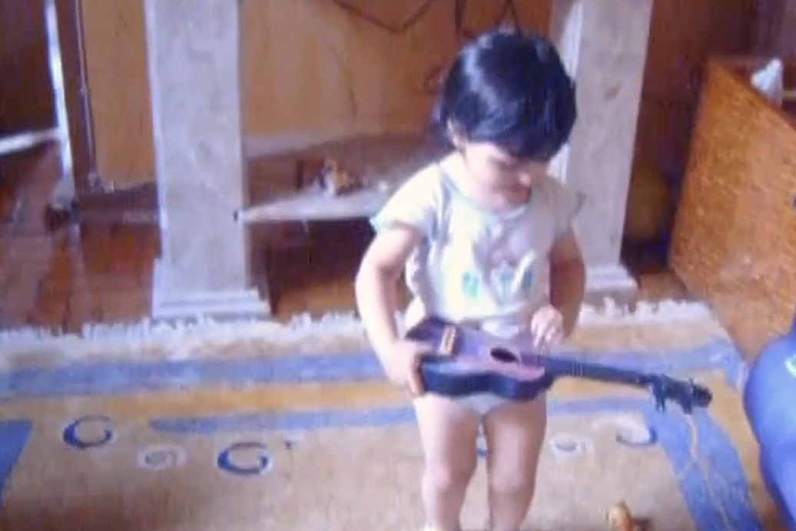

O V-side nasceu da minha paixão por música, da vontade de me aprofundar em seus aspectos técnicos e de aprimorar meu senso crítico musical.
Mais do que ouvir, quero entender o que torna cada música única: as escolhas de composição, os arranjos, as letras, as melodias e os detalhes que muitas vezes passam despercebidos em uma primeira escuta.
Este espaço é onde compartilho minhas resenhas de músicas e álbuns, registro minhas impressões, reúno referências e dou forma às ideias que surgem ao longo da minha jornada musical. Também é um lugar para guardar inspirações, explorar diferentes gêneros e documentar tudo aquilo que a música desperta em mim.
O V-side é o meu jeito de olhar para a música por outro ângulo — com curiosidade, liberdade e a vontade constante de descobrir algo novo a cada reprodução.
Afinal, sempre existe um outro lado para ouvir.
Oi! Eu sou a Viviane, nasci em São Paulo e, desde bebezinha, a música já fazia parte da minha vida. Cresci cercada por sons, melodias e canções, e o que começou tão cedo acabou se tornando uma das minhas maiores paixões.
Aos 12 anos, dei meus primeiros passos no aprendizado de um instrumento ao começar a tocar violão. Desde então, minha curiosidade só aumentou! Sou autodidata e gosto de explorar diferentes instrumentos: além do violão, toco guitarra, baixo e ukulele. Atualmente, também tenho me aventurado no aprendizado de teclado e bateria, sempre em busca de novas formas de me expressar através da música.
Ao longo dos anos, a música se tornou muito mais do que um hobby. Ela esteve presente em diferentes momentos da minha vida, me ajudou a atravessar fases difíceis e me mostrou como sons, melodias e letras podem despertar sentimentos que, às vezes, nem conseguimos colocar em palavras.
Foi dessa relação que surgiu a vontade de olhar para a música além do simples ato de ouvir: entender suas camadas, explorar os detalhes das composições, compartilhar minhas interpretações e guardar as ideias que surgem pelo caminho.
Criei o V-side para reunir tudo isso em um só lugar — minhas descobertas, resenhas, inspirações e experiências musicais. Este é um espaço para aprender, experimentar e enxergar cada música por diferentes perspectivas.
Espero que, ao passar por aqui, você também encontre algo que te faça sentir, pensar ou simplesmente apertar o play mais uma vez.


